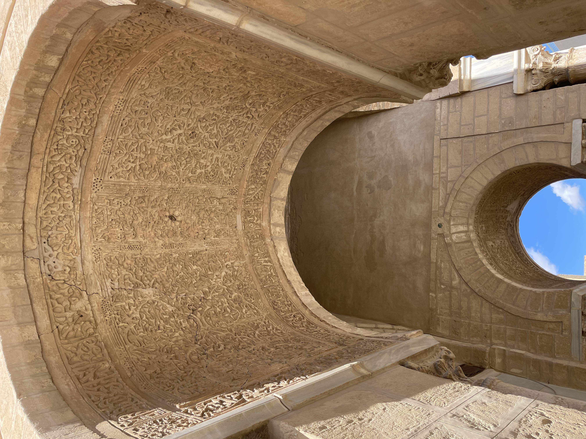

Médina de Kairouan _
La médina de Kairouan est une médina tunisienne,
cœur historique de la ville de Kairouan,
inscrite depuis le 9 décembre 1988
au patrimoine mondial de l'Unesco1,2.
Première ville arabe d'Afrique du Nord,
la médina de Kairouan fondée par Oqba Ibn Nafi al-Fihri
a été un important centre islamique de l'Afrique du Nord musulmane,
l'Ifriqiya. Elle est souvent désignée comme la quatrième ville sainte
(ou sacrée) de l'islam et la première ville sainte du Maghreb3.
